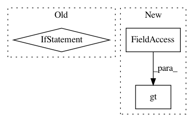

15700dc6bbf845a2f212063982c00642a386d57e,hypergan/samplers/batch_walk_sampler.py,BatchWalkSampler,_sample,#BatchWalkSampler#,24
Before Change
def _sample(self):
gan = self.gan
self.step+=1
if self.step > self.step_count:
self.latent1 = self.latent2
self.latent2 = self.gan.latent.next()
self.direction = (self.latent2-self.latent1) / self.step_count
self.step = 0
latent = self.direction * self.step + self.latent1
latent = self.hardtanh(latent)
self.latent2 = latent
After Change
gan = self.gan
self.pos = self.direction * self.velocity + self.pos
mask = torch.gt(self.pos, self.ones)
mask += torch.lt(self.pos, -self.ones)
self.direction = self.direction + 2 * self.direction * (-self.ones * mask)
g = gan.generator.forward(self.pos)
In pattern: SUPERPATTERN
Frequency: 3
Non-data size: 3
Instances
Project Name: HyperGAN/HyperGAN
Commit Name: 15700dc6bbf845a2f212063982c00642a386d57e
Time: 2020-07-11
Author: martyn@255bits.com
File Name: hypergan/samplers/batch_walk_sampler.py
Class Name: BatchWalkSampler
Method Name: _sample
Project Name: HyperGAN/HyperGAN
Commit Name: 153e67cedf653ec097db65170a88dd256652d6dc
Time: 2020-08-01
Author: martyn@255bits.com
File Name: examples/colorizer.py
Class Name: WalkSampler
Method Name: _sample
Project Name: QUANTAXIS/QUANTAXIS
Commit Name: 4ba63dbf0e5142603267d2e13ab0fb9762bd7151
Time: 2018-06-04
Author: 604829050@qq.com
File Name: QUANTAXIS/QAData/base_datastruct.py
Class Name: _quotation_base
Method Name: select_time_with_gap